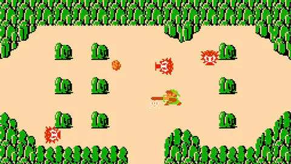
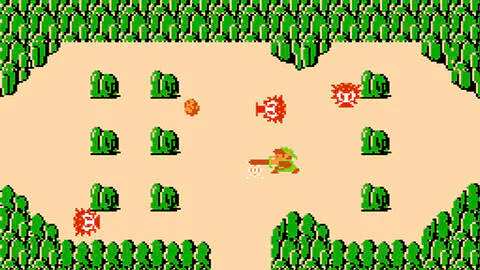

Les differents types
Les jeux 2D utilisent des graphismes plats, appelés sprites, sans dimension tridimensionnelle. Ce graphisme utilise les images numériques principalement issues de modèles en deux dimensions qui sont affichées sur un écran avec une seule perspective qui varie pour chaque genre de jeux 2d qui sont le défilement latéral, la vue de dessus et Pseudo 3d.
Le Jeu en vue de dessus est un jeu avec une vue aérienne, il utilise un angle de caméra qui montre le joueur et la zone autour. Pour ce type de jeu, le personnage se positionne souvent au centre de l'écran.
Ce type de graphisme se trouve fréquemment dans les jeux de simulation, de gestion comme SimCity, Pokémon ou Railroad Tycoon, on peut aussi le trouver dans les genres jeux d'action ou d'action-aventure comme The Legend of Zelda et Grand Theft Auto.
 
